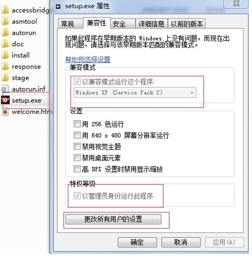
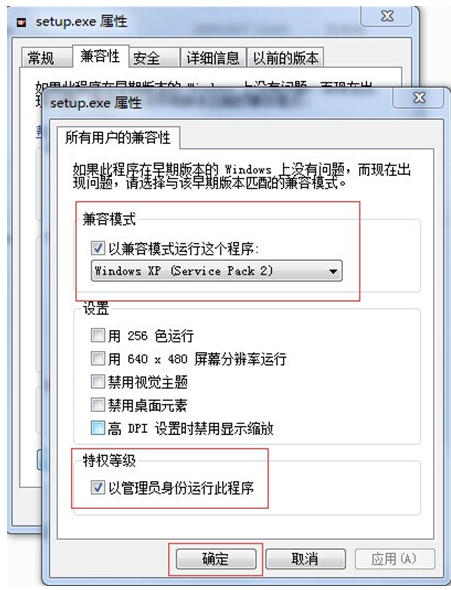
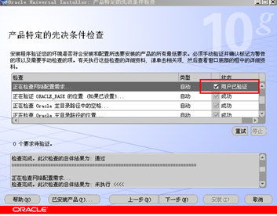
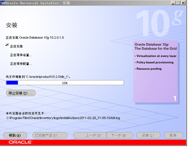
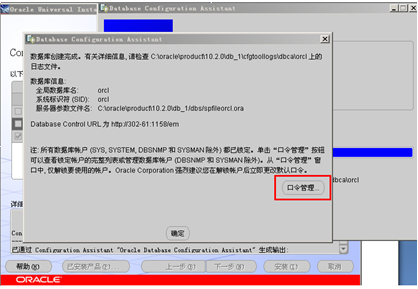
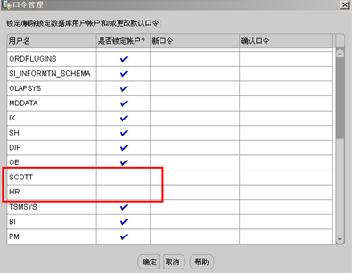
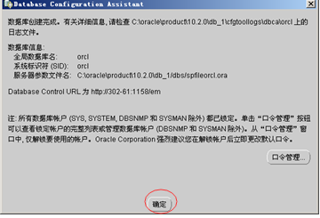

oracle数据库的安装
1. 解压oracle数据库安装包，如果是win7或者win8或者win10系统右键点击setup.exe选择兼容性，以xp方式，并且以管理员方式运行，以及其他所有用户都按着此规则如图


2. 并双击解压目录下的setup.exe，出现安装界面，如下：
3. 输入口令和确认口令，如：password，点击下一步，出现如下进度条，注：此口令即是管理员密码。
4. 检查先决条件，选中红框所示的选择框，如下图：

5. 点击“下一步”，出现“概要”界面，点击“安装”。
6. 出现安装进度条，等待安装完成，如下图：

7. 安装完成后，自动运行配置向导，如下图，等待其完成：
8. 完成后，出现“口令管理”界面，点击“口令管理”，如下图：

9. 将SCOTT和HR用户的沟去掉（解锁这两个账户），如下图所示，点击“确定”：

10. 回到“口令管理”界面，点击“确定”，如下图：

11. 安装结束，点击“退出”
设置oracle数据库的服务
oracle数据库安装完成之后会出现如下的系统服务：